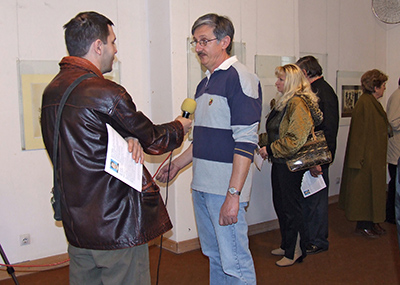

Samostalne izložbe:
- 2007. godine u galeriji Lazar Vozarević u Sremskoj Mitrovici
- 2007. godine u poliklinici SIRMIUM-MEDIC u Sremskoj Mitrovici
- 2012. godina, Foaje Kulturnog centra Pančeva
- 2012. godina, Galerija TRAG Beograd
- 2013. godina Carska Palata u Sremskoj Mitrovici
- 2014. godina 12 soba 8 izložbi u Kući Kralja Petra I u Beogradu sa Ljiljanom Stevanović u organizaciji ART
MARKETA
Izložbe u galeriji:
- Više puta kolektivno izlagao u Sremskoj Mitrovici u Galeriji Lazar Vozarević u periodu 1970.-1973. godine
- 2005. godine – učesnik sremskog salona u Galeriji Lazar Vozarević
- 2005. godine – izlagao na smotri likovnog stvaralaštva amatera Srema u galeriji Muzeja Srema u organizaciji
Ustanove za negovanje kulture SREM
- 2005. godine izlagao na zonskoj smotri likovnog Stvaralaštva u Rumi
- 2006. godine izlagao na smotri amatera Srema u galeriji Muzeja Srema u organizaciji Ustanove za negovanje
kulture SREM
- 2006. godine izlagao na zonskoj smotri amatera Srema u galeriji Muzeja Srema u u organizaciji Ustanove za
negovanje kulture SREM
- 2006. godine učesnik Pokajinske smotre likovnog stvaralaštva amatera Vojvodine u Novom Bečeju
- 2006. godine učesnik sremskog salona u Galeriji Lazar Vozarević
- 2007. godine učesnik izložbe ULU Sirmium u galeriji Lazar Vozarević
- 2007. godine učesnik izložbe ULU Sirmium u Zavičajnom muzeju u Rumi
- 2007. godine izlagao na smotri likovnog stvaralaštva Amatera opštine Sremska Mitrovica u galeriji Muzeja
Srema u organizaciji Ustanove za negovanje kulture SREM
- 2007. godine izlagao na 8. smotri likovnog stvaralaštva Amatera Vojvodine u galeriji Doma kulture u Novom
Bečeju u organizaciji Zavoda za kulturu Vojvodine
- 2007. godine učesnik Vojvođanskog salona u Galeriji Lazar Vozarević
- 2008. godine učesnik majske izložbe ULU Sirmium u Galeriji Lazar Vozarević
- 2008. godine učesnik SREMSKOG SALONA u galeriji Lazar Vozarević
- 2009. godine učesnik majske izložbe ULU Sirmium u Galeriji Lazar Vozarević
- 2009. godine učesnik jesenje izložbe ULU Sirmium u Galeriji Muzeja Srema
- 2010. godine učesnik izložbe ULU Sirmium u biblioteci Grigorije Vozarević
- 2010. godine učesnik X međunarodnog bijenala umetnosti minijature, Gornji Milanovac
- 2010. godine učesnik majske izložbe ULU Sirmium u Galeriji Lazar Vozarević
- 2010. godine učesnik XIX izložbe malog formata, Kulturni centar Šabac
- 2010. godine učesnik međunarodne izložbe Art in Miniature, Majdanpek
- 2010. godine učesnik X-og jubilarnog novembarskog salona, Galerija Vladislav Maržik, Kraljevo
- 2010. godine učesnik SREMSKOG SALONA u Galeriji Lazar Vozerević
- 2010. godine učesnik izložbe 30x30 u organizaciji Kulturnog centra Zrenjanin
- 2010. godine učesnik Međunarodne izložbe minijatura Galerije TRAG u Beogradu
- 2010. godine učesnik Jubilarne izložbe ULU SIRMIUM u Muzeju srema u Sremskoj Mitrovici
- 2011. godina izložba mail art u Nišu u prostorijama Kulturnog centra Niš, omaž Paul Celanu u organizaciji
Zvonimira Kostića Palanskog ( u 6 gradova u Srbiji )
- 2011. godine učesnik manifestacije Noć otvorenih ateljea u organizaciji Udruženja slikara i vajara Beograda.
- 2011. godine učesnik I Medjunarodnog trijenala Vizuelne i eksperimentalne poezije u Valjevu u organizaciji
Dejana Bogojevića, književnika i likovnog umetnika
- 2011. godine učesnik izložbe Minijatura u Zrenjaninu u organizaciji SAKUD Zrenjanin
- 2011. godine učesnik XX izložbe malog formata, Kulturni centar Šabac
- 2011. godine učesnik međunarodne izložbe Art in Miniature, Majdanpek
- 2011. godine učesnik XI-tih zrenjaninskih susreta slikara u Narodnom muzeju Zrenjanin
- 2011. godine učesnik Međunarodne izložbe minijatura Galerije TRAG u Beogradu
- 2011. godine učesnik izložbe 30x30 u organizaciji Kulturnog centra Zrenjanin
- 2011. godine izložene slike u Valjevu u knjižari Službeni glasnik u okviru promocije časopisa AKT u
organizaciji Dejana Bogojecića književnika i likovnog umetnika
- 2011. godine učesnik izložbe minijatura Minimum maximum 3 u Muzeju Republike Srpske u Banjaluci u
organizaciji UAA Banjaluka
- 2011. godine učesnik izložbe Inspiracija Pikaso u galeriji Sinagoga u Nišu u organizaciji Zvonimira Kostića
Palanskog. postavka obišla 3 grada : Knjaževac, Bor i Aleksinac
- 2012. godine učesnik izložbe 48 Slikara Srema iz fundusa galerije Lazar Vozarević iz Sremske Mitrovice
- 2012. godina TEME IZ (VAN) Internacionalni likovni projekat u Klubu Narodnog muzeja Valjevo, u organizaciji
Dejana Bogojevića književnika i likovnog umetnika
- 2012. godine učesnik izložbe Minijatura u Zrenjaninu u organizaciji SAKUD Zrenjanin
- 2012. godina Papergirl Novi Sad u organizaciji Kulturanova
- 2012. godine učesnik manifestacije Noć otvorenih ateljea u organizaciji Udruženja slikara i vajara Beograda.
- 2012. godine učesnik XIX izložbe crteža, Kulturni centar Šabac
- 2012. godine učesnik međunarodne izložbe Art in Miniature, Majdanpek
- 2012. godina Papergirl Beograd
- 2012. godina SLIKE PROCESA Internacionalni likovni projekat u galeriji RIM Požega, u organizaciji Dejana
Bogojevića književnika i likovnog umetnika
- 2012. godina, učesnik XII-tih zrenjaninskih susreta slikara
- 2012. godina 40.World Gallery of Drawing – OSTEN Biennial of drawing, Skopje 2012 , Macedonia
- 2012. godine učesnik izložbe Der blau reiter u galeriji Centra za kulturu Aleksinac, galeriji Sinagoga u
Nišu u organizaciji Zvonimira Kostića Palanskog
- 2012. godine učesnik SREMSKOG SALONA u Galeriji Lazar Vozerević
- 2012. godine učesnik IX Bijenala portreta, Kulturni centar Šabac
- 2012. godine učesnik izložbe 30x30 u organizaciji Kulturnog centra Zrenjanin
- 2012. godine učesnik Međunarodne izložbe minijatura Galerije TRAG u Beogradu
- 2013. godine učesnik međunarodne izložbe Moja galerija moji prijatelji, Centar za kulturu Majdanpek u
organizaciji Ljiljane Stevanović slikarke
- 2013. godine učesnik izložbe HEIL KUNST u galeriji Centra za kulturu Aleksinac u organizaciji Zvonimira
Kostića Palanskog
- 2013. godina Papergirl Novi Sad u organizaciji Kulturanova
- 2013. godina RUBOVI I DLANOVI Internacionalni likovni projekat u galeriji centra za kulturu Valjevo, u
organizaciji Dejana Bogojevića književnika i likovnog stvaraoca
- 2013. godine učesnik manifestacije Noć otvorenih ateljea u organizaciji Udruženja slikara i vajara Beograda
- 2013. godinaII Međunarodna izložba malog formata Novi Pazar
- 2013. godine učesnik izložbe Minijatura u Zrenjaninu u organizaciji SAKUD Zrenjanin
- 2013. godine učesnik III Medjunardonog bijenala minijature “VoVa “ MiniArt 2013. Mađarska
- 2013. godine učesnik međunarodne izložbe Art in Miniature, Majdanpek
- 2013. godina Art on Call Official Art Show 2013
- 2013. godine učesnik XXII izložbe malog formata, Kulturni centar Šabac
- 2013. godina Izložio 12 radova u Carskoj palati u Sremskoj Mitrovici na manifestaciji Zlatni dani vina u
organizaciji društva poštovalaca vina Marcus Aurelius Probus
- 2013. godine učesnik VII Bijenala umetnost minijature BIH u organizaciji Bosanskog kulturnog centra Tuzla
- 2013. godina Papergirl Subotica
- 2013. godine Art in Miniature u Beogradu u Galeriji matice iseljenika
- 2013. godine izlozba HEIL KUNST u Muzeju u Vranju
- 2013. godina Papergirl Beograd
- 2013. godine učesnik Medjunardonog bijenala malog formata I Homorod Salon 2013. Rumunija u organizaciji
Fundation Homorod Arts
- 2013. godine učesnik izložbe 30x30 u organizaciji Kulturnog centra Zrenjanin
- 2013. godine učesnik Međunarodne izložbe minijatura Galerije TRAG u Beogradu
- 2013. godina Niški crtež u organizaciji Galerije savremene umetnosti Niš
- 2014. godina učesnik izložbe Mail art, Spanyolnatha. Miskolc Madjarska
- 2014. godina učesnik izložbe MOSLAVAČKE MINIJATURE u organizaciji Moslavački štrk, Popovača , Hrvatska
- 2014. godine učesnik XII međunarodnog bijenala umetnosti minijature, Gornji Milanovac
- 2014. godina učesnik I Bijenale crteža, Smedervska Palanka, U Memorijalnoj galeriji Dušan Starčević
- 2014. godine ucesnik izložbe koju organizuje FAB fridge London /izložba magneta za frižidere/
- 2014. Godina učesnik Prolećnog salona u galariji Kulturnog centra Aleksinac
- 2014. godine učesnik II Medjunarodnog trijenala Vizuelne i eksperimentalne poezije u Valjevu u organizaciji
Dejana Bogojevića, književnika i likovnog umetnika
- 2014. godina učesnik 17.Medjunarodne izložbe minijatura , Zaprešić ,Hrvatska
- 2014. godina učesnik na LIX Majskim susretima u galeriji AKADEMIJA 28 u Beogradu
- 2014. godina učesnik izložbe Mail art, Starzbur, Francuska
- 2014. godine učesnik XXI izložbe crteža, Kulturni centar Šabac
- 2014. godine učesnik izložbe Minijatura u Zrenjaninu u organizaciji SAKUD Zrenjanin
- 2014. godina učesnik Papergirl Beograd
- 2014. godine učesnik međunarodne izložbe Art in Miniature, Majdanpek
- 2014. godine učesnik IV Medjunardonog Balaton salona Mađarska
- 2014. godine učesnik izložbe Matićevi dani, Ćuprija u Muzeju Horreum Margi-Ravno
- 2014. godine učesnik 58. Oktobarskog salona u Šapacu u Narodnom muzeju Šabac.
- 2014. godine učesnik 2, Medjunarodnog konkursa malog formata Novi Sad u organizaciji Udruženja nezavisnih
umetnika Novi Sad
- 2014. godine učesnik XIV-tih zrenjaninskih susreta slikara u Narodnom muzeju Zrenjanin
- 2014. godina učesnik izložbe Mail art, tema duga, studio J-1324, Victoria, Canada
- 2014. godina učesnik 17.Medjunarodne izložbe minijatura , Zaprešić ,Hrvatska, Beograd, galerija kuća Đure
Jakšića
- 2014. godine učesnik međunarodne izložbe Art in Miniature, Majdanpek, Petrovac na Mlavi u organizaciji
Zavicajnog muzeja Petrovac na Mlavi i Galerije Krug
- 2014. godine učesnik međunarodne izložbe Art in Miniature, Majdanpek, Beograd u galeriji Matice iseljenika
- 2014. godine učesnik 2, Medjunarodnog bijenala male grafike 2014, u Nišu u izložbenom prostoru Paviljon u
Tvrđavi
- 2014. učesnik ZEMUNSKOG SALONA u galeriji Stara Kapetanija
- 2014. godina učesnik IV Medjunarodne izložbe, slike malog formata u Galeriji Otvorenog univerziteta Subotica
- 2014. godina učesnik IV Medjunarodne izložbe, slike malog formata, Art galey Bačka Topola
- 2014. godina učesnik 32. Jesenjeg salona u galeriji Kulturnog centra Aleksinac
- 2014. godina učesnik izložbe Mail art, Incline Galery in San Framcisco
- 2014. godine učesnik izložbe 30x30 u organizaciji Kulturnog centra Zrenjanin
- 2014. godina učesnik izložbe Niški crtež u organizaciji Galerije savremene umetnosti Niš
- 2014. godine učesnik 16. Rumskog likovnog salona u Kulturnom centru Ruma